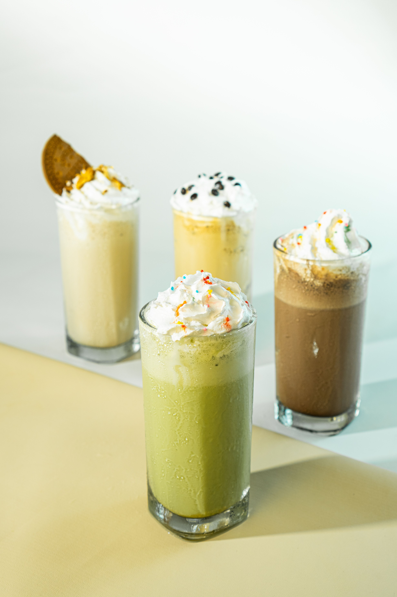

Milk
Tea leaves
Sugar
Description:
Milk tea is a versatile beverage made by blending brewed tea with milk, sweeteners, and sometimes chewy toppings like tapioca pearls.
Cooking:,
In a sufuria put milk,tea leaves and sugar to your taste,
let it boil for 15 mins serve while hot with salt or sweet snacks accompaniments.

2 ripe avocadoes
Milk
Sugar
Description:
Avocado juice is a creamy, decadent beverage made by blending ripe avocado flesh with a liquid like milk or water, and a sweetener such as sugar, honey, or condensed milk.
Making:
In a blender, mix the milk, sugar and the chopped avocadoes.
blend until a watery consistency is achieved.
serve while cold with salty snacks

2 ripe mangoes
Sugar
Water ,
Description:
Mango juice is a vibrant, tropical beverage made by blending the pulp of ripe mangoes with water.
Making:
In a blender, mix the water,
sugar and chopped mangoes
blend until a watery consistency is achieved.

Cold milk,
Sugar
Peprose
Description
A milkshake is a sweet, cold beverage made by blending milk, ice cream, and flavorings.
Making:
Mix milk peprose,milk and sugar.
serve while cold with salty accompaniments

3 raw potatoes
3 cups oil
Description:
Thinly sliced potatoes that are deep-fried or baked until crunchy. They are widely consumed as a snack, come in various seasonings, AKA "french-fries" or "chips"
Cooking:
fry thinly sliced potatoes and serve with desired sauces